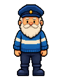
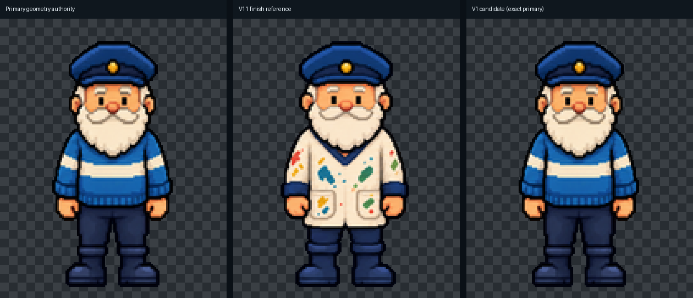
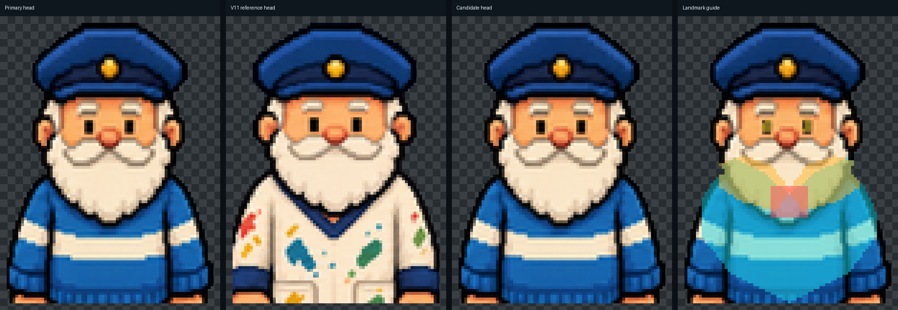

Primary geometry authority

SHA-256 6d3b5057f7dad4410230c5c2a1959a2db468aca6f2d28486ec6db9e07827056a
This versioned comparison locks the direct-front identity before any animation-family edits. The candidate is an exact copy of the selected primary geometry authority; the accepted V11 smock image is finish/reference evidence only.

SHA-256 6d3b5057f7dad4410230c5c2a1959a2db468aca6f2d28486ec6db9e07827056a

SHA-256 14c70ab69c9cb558d1a7b9b092425718a43269ea8fb2a20ad3d64638d30ea17a

Byte-identical to primary: yes
SHA-256 6d3b5057f7dad4410230c5c2a1959a2db468aca6f2d28486ec6db9e07827056a
Adult restrained face: solid dark rectangular eyes; separate moustache; readable closed mouth; established beard mass. No white eye glints, round childlike eyes, generic smile, cheesy pixie grin, or mouth merged into the moustache.



9baccdda8757fe07d5056950827892a688ca0e3aeddd22953008e9983345b301
21b3cfd6b1675d992796898978de428664fa0ce2fea9530c0d79b2451261358b

2e54f3da3e84a61c30832ad21dc1c31376bf65a93df92ffce403cd20aeb786af

e727fd436396296afaa42348988dc8d5b518a6eebaa5ca15efda89c3a5ef810f

482e5349969c248aed15012110d0a5a1c531d7dd03d3ba4575837bb318a9138a

f70f13f184254958a86d040321544adb61b50e1050b9d62759aa5bef40832f65
62 direct/near-direct full-face assets inventoried: 34 clips, 18 technical neutrals, 9 bridges and 1 obsolete technical reference.
Existing opaque-cell-edge risks are recorded for legacy art; this candidate itself has zero opaque edge pixels and binary alpha.
Not candidates and not reactivated: keeper_lift_button_front, keeper_mechanic_walk_front, keeper_party_dance, keeper_party_idle, keeper_pyjamas_turn_back, keeper_scuba_swim_down, keeper_souwester_walk_front, keeper_spaceman_walk_front, keeper_swim_costume_down, keeper_tarzan_walk_front, keeper_trampoline_front, keeper_water_plants_front. keeper_count_money's rejected amendment remains explicitly deleted and was not regenerated.
Approved by Frank on 12 October 2026: “Approve full-face canon pack V1. These are excellent.” The approval confirms this neutral geometry, landmarks, masks/guides and reference hierarchy, and authorizes small reversible review batches. It does not promote any sprite or approve a whole-inventory rewrite.